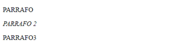
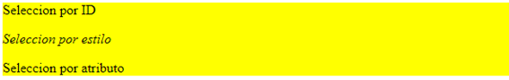
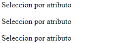
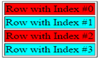
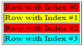
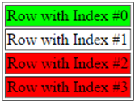
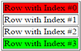
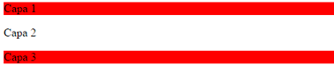

Ya hemos comentado que el uso más básico de JQuery consiste seleccionar
uno o varios elementos HTML del DOM y manipularlos obteniendo y
modificando sus propiedades. Por ejemplo; si se desea modificar la
imagen mostrada por un elemento <img>
primero
debe obtenerse el elemento que la representa en el DOM.
Para poder seleccionar un elemento de una página, primero debe esperarse a que la página se haya cargado completamente. Para ello se declara una función anónima asociadas al evento ready del document, que se ejecuta cuando la página ha terminado de cargarse:
$(document).ready(function () { // Código a ejecutarse al completarse la carga de la página }); |
También puede emplearse la forma abreviada:
$(function () { // Código a ejecutarse al completarse la carga de la página }); |
La selección de elementos mediante JQuery emplea por defecto
$() que es una alias de la función jquery(). Como
argumento se indica una cadena con un selector como los selectores de
CSS3 además de añadir algunos selectores propios:
Todo selector devuelve una selección, que puede contener uno, ninguno, o varios elementos del DOM en función del contenido de la página y el selector empleado:
Selector por ID : Esto selecciona aquel elemento cuyo atributo id = “identificador”
$("#identificador") |
Selector por estilo : Esto selecciona aquellos elementos que tengan la clase de estilo “.nombreClase”.
$(".nombreClase") |
Selector por etiqueta ( tag ) : Esto selecciona todos los elementos <a>
$("a") |
Selector por atributos : Esto selecciona todos los enlaces <a> con el atributo name = ‘enlaces’.
$("a[name='enlaces']") |
En este tipo de selector pueden emplearse las siguientes
variaciones:
$("a[name|='pos']")
Devuelve todos los elementos cuyo atributo ‘name’ tenga como valor ‘pos’, o un valor que empieza por ‘pos’.
$("a[name*='pos']")
Devuelve todos los elementos cuyo atributo ‘name’ tenga un valor en el que aparezca ‘pos’ al principio, final, o en medio.
$("a[name~='pos']")
Devuelve todos los elementos cuyo atributo ‘name’ contenga el valor ‘pos’ entre dos espacio en blanco, uno delante y otro detrás.
$("a[name$='pos']")
Devuelve todos los elementos con el atributo “name” cuyo valor termine en “pos”.
Referencia: https://www.w3.org/TR/selectors-3/#attribute-selectors
Ejemplo: Sea la siguiente página HTML que muestra una serie de párrafos dentro de una capa:
<!DOCTYPE html> <html> <head> <title></title> <meta charset="utf-8" /> <style type="text/css"> .estilo { font-style: italic; } </style> </head> <body> <div> <p id='parrafo'>PARRAFO</p> <p class='estilo'>PARRAFO 2</p> <P name='parrafo'>PARRAFO3</p> </div> </body> </html> |
El aspecto de la página es el siguiente en origen:

Con JQuery podemos modificar el contenido original de los párrafos
empleando los selectores y el método text() que permite tanto obtener como modificar sus contenidos. De igual
modo, t ambién puede emplearse el método css() para añadir una regla de estilo indicando la propiedad y el
valor:
(*) El siguiente código asume el uso de la librería “jquery-3.2.1.min.js” alojada localmente en una subcarpeta “scripts”:
<!DOCTYPE html> <html> <head> <title></title> <meta charset="utf-8" /> <style type="text/css"> .estilo { font-style: italic; } </style> <script src="scripts/jquery-3.2.1.min.js"></script> <script> $(function () { $('#parrafo').text('Seleccion por ID'); $('.estilo').text('Seleccion por estilo'); $('[name="parrafo"]').text("Seleccion por atributo"); $('div').css({'background-color': '#ffff00'}); }) </script> </head> <body> <div> <p id='parrafo'>PARRAFO</p> <p class='estilo'>PARRAFO 2</p> <P name='parrafo'>PARRAFO3</p> </div> </body> </html> |
La página modificada por JQuery se muestra ahora del siguiente modo independientemente del contenido HTML que permanece sin cambios.

Un selector puede seleccionar al mismo tiempo uno o más elementos que
cumplen con la condición indicada. En tal caso los cambios se aplican a
todos los elementos seleccionados.
Ejemplo: La siguiente página muestra la selección de los tres párrafos por el valor de su etiqueta 'name' y la manipulación de su contenido mediante JQuery:
<!DOCTYPE html> <html> <head> <title></title> <meta charset="utf-8" /> <script src="scripts/jquery-3.2.1.min.js"></script> <script> $(function () { $('[name="parrafo"]').text("Seleccion por atributo"); }) </script> </head> <body> <div> <p name='parrafo'>PARRAFO</p> <p name='parrafo'>PARRAFO2</p> <P name='parrafo'>PARRAFO3</p> </div> </body> </html> |
Todos los párrafos son seleccionados y su contenido modificado, por lo que
la página muestra el siguiente aspecto a pesar del contenido indicado en
el código HTML:

Los selectores pueden combinarse para seleccionar elementos de manera más precisa siguiendo la jerarquía del DOM siguiendo las siguientes reglas:
Por ejemplo: El siguiente selector obtiene aquellos elementos <div> con el estilo "estilo":
$("div.estilo");
El siguiente selector obtiene todos los elementos <li> contenidos en listas <ul> con el estilo "personas" contenidas en un elemento con id "contenido":
$( "#contenido ul.personas li" );
Esta selección funciona del siguiente modo:
JQuery incluye pseudoselectores para seleccionar elementos de manera más precisa que con los selectores básicos. Estos selectores se caracterizan por tener el prefijo ":". Se distinguen los siguientes tipos:
|
|
(*) Esto selectores son equivalentes a $(“input[type=’xxxx’]”). |
|
Ejemplo: El siguiente código devuelve todos los elementos <input type=’radio’> contenidos en otro elemento (p.ej: un formulario, o una capa)
con id=’opciones’:
$("#opciones :radio"); // Combinado con otro selector. |
Ejemplo: El siguiente selector devuelve todas las casillas de
verificación marcadas contenidas en la capa con id = ‘intereses’. Los selectores “:checkbox” y
“:checked” van juntos para referirse al mismo conjunto de elementos.
$('#opciones :checkbox:checked'); |
|
:contains() -> Devuelve todos los elementos que contengan el texto especificado como argumento.
Ejemplo: La siguiente selección devuelve todas las capas <div> que contengan “Jhon” en su contenido.
$("div:contains('John')") |
:empty -> Devuelve todos los elementos sin
elementos anidados. La siguiente seleccion devuelve todos los
elementos <td> sin contenido.
$("td:empty") |
Estos selectores permiten seleccionar elemento en base a la posición de ocupan dentro de un elemento contenedor.
|
Habitualmente estos pseudoselectores se emplean combinados
con otro selector para refinar aun más los elementos a seleccionar.
Ejemplo: Sea el siguiente código selecciona por separado los elementos <tr> contenidos en la tabla en posiciones pares e impares añadiéndoles un color de fondo distinto en cada caso:
<!DOCTYPE html> <html> <head> <title></title> <meta charset="utf-8" /> <script src="scripts/jquery-3.2.1.min.js"></script> <script> $(document).ready(function () { $("tr:even").css("background-color", "#ff0000"); // fondo rojo para <tr> pares $("tr:odd").css("background-color", "#00ffff"); // fondo azul para <tr> impares }); </script> </head> <body> <table border="1"> <tr><td>Row with Index #0</td></tr> <tr><td>Row with Index #1</td></tr> <tr><td>Row with Index #2</td></tr> <tr><td>Row with Index #3</td></tr> </table> </body> </html> |
El resultado pinta de rojo el fondo de las celdas pares y de azul las
impares:

Si añadimos el siguiente código:
<script> $().ready(function () { $("tr:even").css("background-color", "#ff0000"); $("tr:odd").css("background-color", "#00ffff"); $("tr:eq(1)").css("background-color", "#ffff00"); // fondo Amarillo para <tr> en indx.1 }); </script> |
El resultado es que se pinta de amarillo el fondo de la celda nº2 (
posición 1 ):

Los selectores :lt() y :gt() devuelven todos los elementos anteriores y posteriores respectivamente al elemento en la posición indicada como valor. Los indices toman como base el valor 0 para el primer elemento. Si se indica un valor negativo, se comienza la cuenta a partir del último elemento..
Ejemplo: El siguiente código muestra la selección de todos los elementos <tr> dispuestos dentro de la tabla antes y después del elemento <tr> en la posición 1.
<!DOCTYPE html> <html> <head> <title></title> <meta charset="utf-8" /> <script src="scripts/jquery-3.2.1.min.js"></script> <script> $().ready(function () { $("tr:gt(1)").css("background-color", "#ff0000"); // fondo rojo a <tr> posteriores a <tr> indx 1 $("tr:lt(1)").css("background-color", "#00ff00"); // fondo verde a <tr> anteriores a <tr> indx 1 }); </script> </head> <body> <table border="1"> <tr><td>Row with Index #0</td></tr> <tr><td>Row with Index #1</td></tr> <tr><td>Row with Index #2</td></tr> <tr><td>Row with Index #3</td></tr> </table> </body> </html> |
El resultado muestra de color rojo todas las siguientes a partir de
las segunda “ :gt(1)”, y de verde todas las
anteriores “:lt(1)”.

Los selectores :first y :last devuelven el primer y último elemento de la selección:
<!DOCTYPE html> <html> <head> <title></title> <meta charset="utf-8" /> <script src="scripts/jquery-3.2.1.min.js"></script> <script> $().ready(function () { $("tr:first").css("background-color", "#ff0000"); // fondo rojo primer <tr>. $("tr:last").css("background-color", "#00ff00"); // fondo verde ultimo <tr>. }); </script> </head> <body> <table border="1"> <tr><td>Row with Index #0</td></tr> <tr><td>Row with Index #1</td></tr> <tr><td>Row with Index #2</td></tr> <tr><td>Row with Index #3</td></tr> </table> </body> </html> |
El resultado mostrado es el fondo de color rojo en el primer
elemento fila, y el color verde de fondo en el último.

El selector :has() selecciona los elementos que contengan al menos un elemento con el selector indicado como argumento:
Ejemplo: El siguiente código muestra la selección de todas las capas <div> que contienen algún párrafo:
<!DOCTYPE html> <html> <head> <title></title> <meta charset="utf-8" /> <script src="scripts/jquery-3.2.1.min.js"></script> <script> $().ready(function () { $("div:has(p)").css("background-color", "#ff0000"); // Fondo rojo a capas con algún párrafo }); </script> </head> <body> <div><p>Capa 1</p></div> <div>Capa 2</div> <div><p>Capa 3</p></div> </body> </html> |
El resultado mostrado es el siguiente:

|
(*) En la web oficial de la API de JQuery se encuentran un glosario con los selectores definidos: |